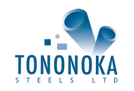
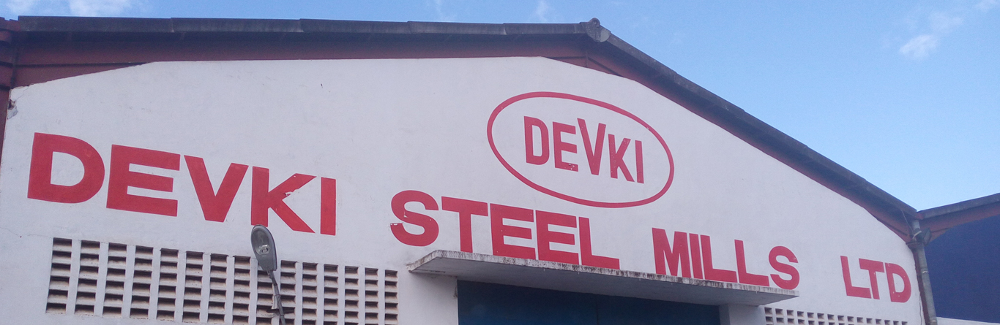
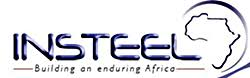
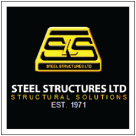

Apex Steel
The company is a leading manufacturer and supplier of steel products that include window sections, black pipes, rectangular pipes, square tubes, circular hollows, and flat bars. Has premium pricing for its quality products.
Steel is known to be a highly durable metal. Steel-framed construction can withstand all kinds of external pressure such as earthquakes and thunderstorms. They do not age or decay as other construction materials. A well-constructed steel framed building can last up to 20 years. Steel is highly flexible and can be easily turned into any shape as desired.
The company is a leading manufacturer and supplier of steel products that include window sections, black pipes, rectangular pipes, square tubes, circular hollows, and flat bars. Has premium pricing for its quality products.
Tononoka Steel is a major supplier of steel products under the Tononoka Group in the Kenyan market. The Tononoka Group has earned an enviable and reputable position in terms of quality, cost-effectiveness and customer service over a period of time. The company supplies hollow sections, sheets & plates, TMT bars, and wire products among others. Offers premium pricing for its products.
Devki Steel Limited is a construction materials manufacturer under Devki Group that supplies a myriad of steel products that include hoop irons, mild steel iron, chain link fencing, and black pipes. Fair and competitive pricing for their products.
Incorporated under the Safal Group of Companies that provides a wide range of products such as Galvanized Pipes, Black Steel Pipes, Hollow Sections, Zed Purlins, Galvanized Conduits, Mild STEEL Channels, Cold Rolled Angles, Cold Rolled Sheets, Mild Steel Plates, Mild Steel Flats, Hoops in Coil, Expanded Metal, and Door Frame Sections. Offers competitive pricing for its products relevant to market needs.
One of the leading manufacturer and supplier of quality building steel and allied products in East and Central Africa. Its array of products are wire, steel, HRC, and structural steel. Competitive pricing for its products.
The company manufactures and supplies a diverse range of quality steel materials used in building and construction of projects such as bridges. Its product categories include structural steel, pre-engineered buildings, eco-frame light gauge steel framing. Additionally, the company offers consultancy and outsourcing services to clients. Its pricing is competitive.
